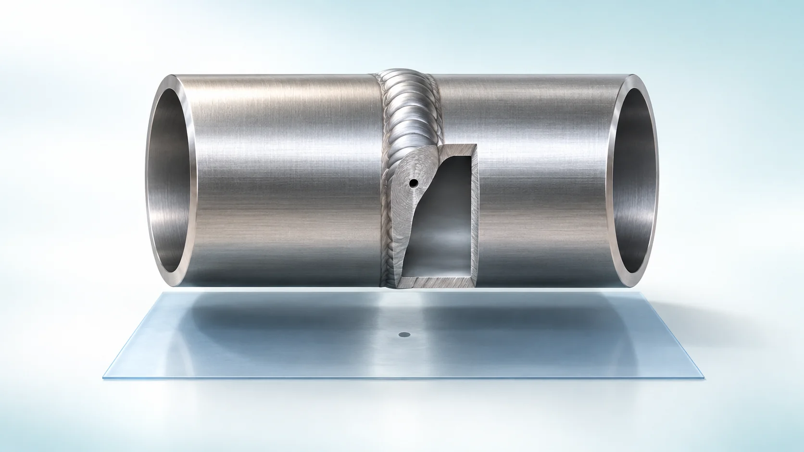
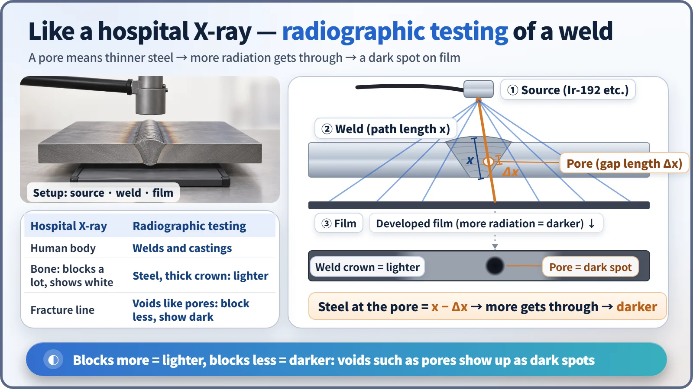
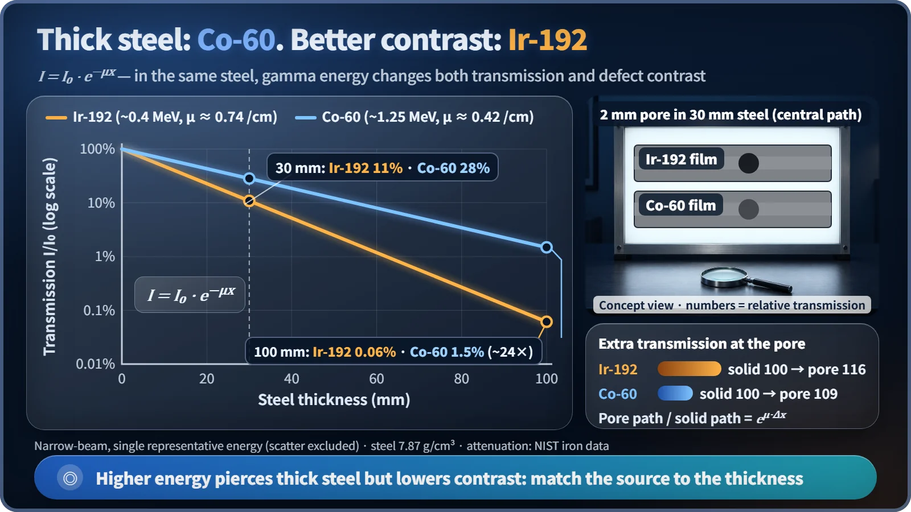

Society, Environment & the Future · 279
An X-Ray for Steel — Industrial Radiography and Non-Destructive Testing
Gamma rays or X-rays through a weld reveal pores as dark spots, and the attenuation law explains why thicker steel needs a higher-energy source at the cost of contrast.

Radiographic testing photographs the inside of a weld the way a hospital X-ray photographs a body. A pore is effectively thinner steel, so more radiation gets through and it shows as a dark spot. The attenuation law I = I₀·e−μx explains why thick steel needs high-energy cobalt-60 while lower-energy iridium-192 gives better contrast.
Say you've just welded a new section into a gas pipeline and want to know whether the joint is truly sound. What's the surest way to check? Cut it open and look at the cross-section. But there's a catch: a pipe you've cut open can't be used anymore. You get your answer, and lose the very thing you were checking.
That's why industry has a whole field called non-destructive testing: inspecting the inside of something without breaking it. There are many methods, from sending in ultrasound to sprinkling magnetic powder. Today's topic is the one that uses radiation: radiographic testing.
Steel instead of bone, pores instead of fractures
The principle is exactly the same as an X-ray picture at the hospital. X-rays are fired from one side of the body and a film catches them on the other. Places that block a lot of radiation, like bone, come out white; places that block less, like muscle, come out dark.
Radiographic testing photographs welds and castings instead of people. A source that emits radiation sits on one side, and film or a digital detector plate is placed on the other. Defects formed during welding show up right in the image: tiny gas bubbles (pores), bits of residue trapped in the metal (slag), fine cracks, and gaps where the metal didn't fuse completely.
Here's an interesting twist. Defects appear dark. A pore is an empty space, so at that spot the steel is effectively a little thinner. More radiation gets through and turns the film blacker. A heavy inclusion such as a fragment of tungsten does the opposite and shows up white.

How much gets through: a one-line formula
As radiation travels through matter, part of it is absorbed or scattered sideways, so its intensity drops. This is called attenuation, and it fits on one line:
I = I₀ · e−μx
I₀ is the intensity going in, I is the intensity coming out, and x is the thickness. μ (mu) is the linear attenuation coefficient, a report card for a given material and energy that tells you how well each centimeter blocks radiation. Every time the thickness grows by the same amount, the intensity is cut by the same fraction.
Real numbers make it concrete. Using iron data from the US National Institute of Standards and Technology (NIST), the gamma rays of iridium-192, the most widely used industrial source (representative energy about 0.4 MeV), keep only about 11% after passing through 30 mm of steel. Higher-energy cobalt-60 (about 1.25 MeV) keeps about 28% through the same thickness. At 100 mm the gap widens further: cobalt-60 gets through about 24 times more than iridium-192. This is a simplified calculation that leaves out scattered radiation, so field values differ, but the trend holds. [1]
A stronger beam isn't always the answer
So should you just always use high-energy cobalt-60? Here's the trap. Imagine a pore 2 mm tall inside a 30 mm steel plate. Compared with its surroundings, about 16% more radiation comes through the pore with iridium-192, but only about 9% more with cobalt-60. Higher energy punches through steel better, but the difference in transmission between the defect and its surroundings, which is the contrast in the picture, gets smaller.

Think of a flashlight. To see through a thick curtain you need a strong light, but a light that's too strong washes out the pattern on the curtain. "Strong" here doesn't mean a bigger source; it means each gamma ray carries more energy. That's why inspectors choose the source to fit the thickness. Roughly speaking, selenium-75 (half-life about 120 days) is used for thin steel, iridium-192 (73.8 days) for medium thicknesses and cobalt-60 (5.27 years) for thick steel. For inspections inside factories, X-ray tubes that make X-rays from electricity are also common. Their big advantage is that when the power is off, no radiation comes out at all.
Half-life affects the work directly, too. Iridium-192 loses half its strength roughly every two and a half months, so sources have to be replaced regularly. Cobalt-60 lasts much longer, but its shielded container is far heavier.
Does the inspected part become radioactive?
It's a common worry, but no. Gamma rays and X-rays at these energies can't change atomic nuclei, so a pipe that has been radiographed is just a pipe. It's the same reason a person doesn't become radioactive after an X-ray.
The same attenuation principle is used on factory lines as well. Gauges measure the thickness of paper or steel sheet in real time from how much radiation passes through, or measure from outside a tank how full it is. The target is thickness or level instead of defects, but the formula is the same.
Nuclear power plants are regular customers of this technology. Welds in parts that hold high-temperature, high-pressure coolant, such as piping and pressure vessels, undergo this kind of volumetric inspection during construction. And the iridium-192 and cobalt-60 used for the inspections are themselves isotopes made by exposing material to neutrons in a reactor. In other words, nuclear technology inspecting nuclear technology.
Handling a flashlight you can't switch off
Unlike an X-ray tube, a gamma source has no off switch. It emits radiation all the time, so it normally sits inside a thick shielded container. Only for an exposure is it pushed out by a remote cable and then wound back in. Workers set up a controlled access area, wear personal dosimeters with alarms, and after each shot use a survey meter to confirm the source has returned properly to its container. The dose limit for radiation workers is 50 mSv in a year and 100 mSv over five years. [2]
Past events show why that confirmation step matters. The International Atomic Energy Agency (IAEA) regards industrial radiography as a field where radiation accidents have been reported relatively often, and it has published a report on the lessons learned. In Morocco in 1984, an iridium-192 source that had come loose from its cable was not recovered. A worker picked it up and took it home, and eight people, including members of his family, died. Afterwards, an international code of conduct was established to strengthen the registration and tracking of radioactive sources. [3] [4] [5]
The whole thing on one page
Radiographic testing photographs the inside of steel the way a hospital X-ray photographs a body. A defect spot is effectively thinner steel, so more radiation gets through and it shows up dark, and the difference is explained by the one-line formula I = I₀·e−μx. Thick steel needs a higher-energy source, but contrast fades, so the skill lies in matching the source to the thickness. And because the source can't be switched off, the final check that it has been recovered is part of the inspection.